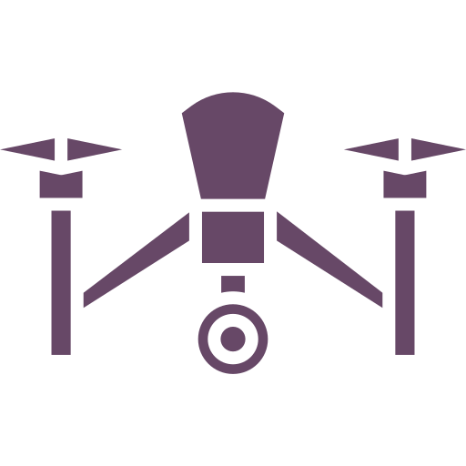

Sobre - Drone Mosquette
Somos um time determinado em alcançar nosso objetivo: diminuir significamente o número de pessoas afetadas pelo mosquito Aedes Aegypti, mais conhecido como "mosquito da dengue".
Nosso projeto se trata de um sistema capaz identificar possíveis focos do mosquito em imagens aéreas gravadas por um Drone. Este programa funciona utilizando técnicas de Visão Computacional e Inteligência Artificial, a especialidade da nossa equipe.
O projeto surgiu no CEFET/RJ Campus Nova Iguaçu, onde participamos de uma competição internacional promovida pela IEEE (Instituto dos Engenheiros Elétricos e Eletrônicos) que buscava premiar projetos de alunos da graduação e do ensino médio que ajudassem a sociedade de alguma forma positiva. Nossa ideia chegou até a final da competição, onde os integrantes viajaram para Florença, na Itália, para representar o nosso país.
O objetivo é otimizar cada vez mais nosso método e aplicá-lo em um cenário real. Nosso sonho é ver este projeto nas ruas ajudando todas as pessoas a não passarem mais pelos problemas que o Aedes Aegypti pode causar.
Pesquisa
Drones
Os famosos “drones”, ou “Veículo Aéreo Não Tripulado” (VANT), são dispositivos que estão ganhando cada vez mais espaço na nossa realidade. Eles podem ser utilizados para diversas tarefas, desde a simples diversão de pilotá-lo até a utilização para gravação de filmagens profissionais de altíssimo nível. Inclusive, esta característica de permitir registrar imagens aéreas de ótima qualidade é o que buscamos em nosso projeto.
Através de drones buscamos obter um grande volume de informações a respeito de locais de difícil acesso para pessoas e em um menor período de tempo. Por exemplo, com um VANT que possui autonomia de voo de 30 minutos, podemos registrar imagens de uma área de até 100.00 m²!
Visão Computacional
Sabe os filtros de selfies que reconhecem seu rosto e colocam algum efeito nele? Isso é obra da Visão Computacional! Este campo da tecnologia busca entender como funciona o comportamento da visão humana, e assim replicá-lo nos computadores utilizando softwares e hardwares para realização de tarefas. Nós usamos a matemática para criar equações que realizam filtros ou identificam padrões de objetos em imagens.
Inteligência Artificial
Sabe os filtros de selfies que reconhecem seu rosto e colocam algum efeito nele? Isso é obra da Visão Computacional! Este campo da tecnologia busca entender como funciona o comportamento da visão humana, e assim replicá-lo nos computadores utilizando softwares e hardwares para realização de tarefas. Nós usamos a matemática para criar equações que realizam filtros ou identificam padrões de objetos em imagens.